ACE THE EXAM / PRODUCT DESIGN CASE STUDY
让每一次练习，
都有下一步。
ACE the Exam 医学备考平台重构。
帮助学习者了解复习情况，安排适合自己的练习。
A clearer way to prepare.
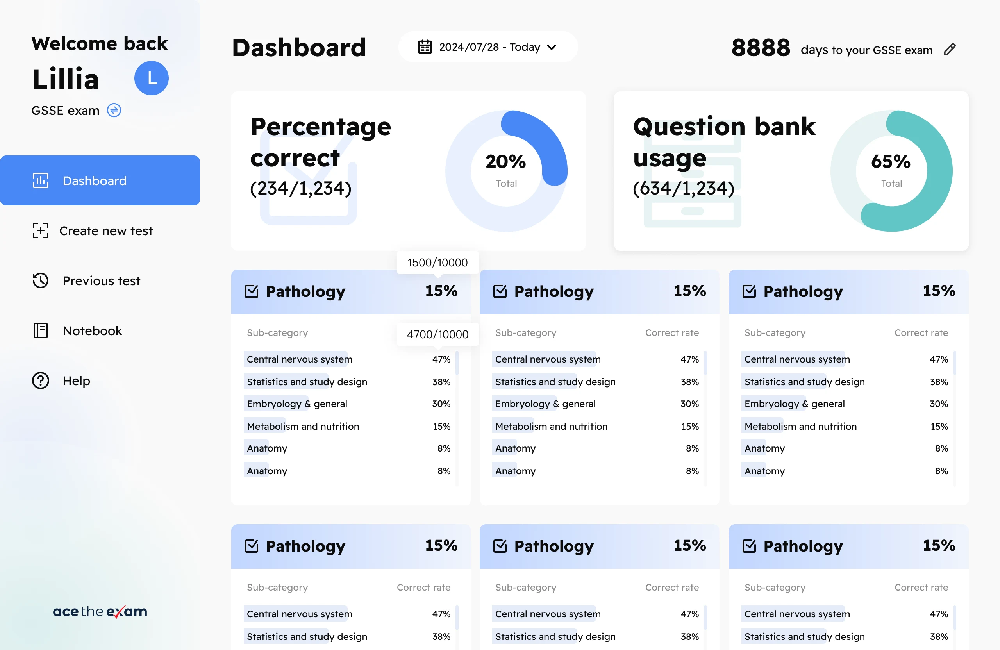
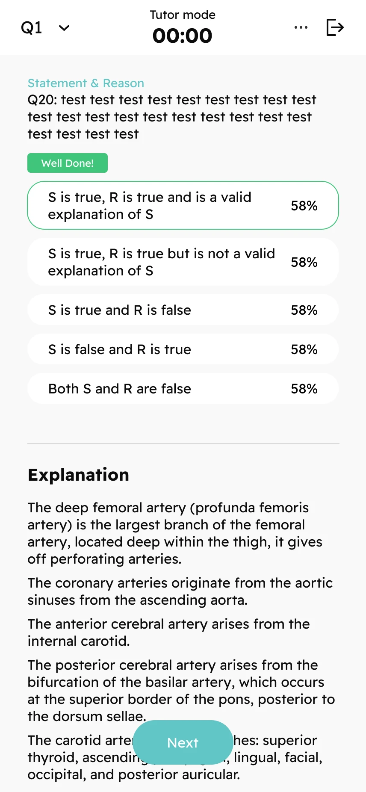
学习进度 · 练习反馈 · 重点回顾
产品逻辑 · 信息架构
交互设计 · 视觉设计
与创始人共同定义产品
与开发伙伴协作落地
2022 至今
远程 / Part-time
Web 学习平台 · 移动端
品牌官网 · Blog
项目起点
用户需要了解自己的复习情况
ACE 面向新西兰的医生与医学相关从业者，用户中也有医学学生。我接手时，平台已验证付费需求，提供了题库选择和创建练习的基本流程。用户在使用中难以了解自己的复习进度，也不方便重新找到做错或值得回看的题目。
场景归纳 / 非用户原话查看创建练习设计 ↗
利用空闲时间安排一轮练习
遇到的困难
用户需要了解已经练过的范围，才能决定这次复习什么。
对应的设计
创建页提供覆盖进度，用户可以据此选择科目，并设置题量和题目状态。
THE CHALLENGE
这次重构要解决的问题
我与创始人结合用户访谈、客服记录和日常反馈，整理了以下问题，作为功能讨论的依据。
用户画像 / Persona
工作之余准备考试的医学从业者
以下画像依据项目中了解到的使用场景整理，代表平台的一类核心用户。平台也服务医学学生，这里重点讨论在职备考的需求。
在职备考需要兼顾工作
需要兼顾工作
与考试准备
平时利用空闲时间复习，有较完整的时间时通过电脑练习，也会在手机网页上做题。
PC 网页端手机网页端
场景归纳，非单个受访者档案完成考试准备，并了解自己的复习情况
需要知道哪些科目已经练过，哪些题还值得回看。考前希望在限时条件下检验作答表现。
复习时间分散，难以凭记忆跟踪进度
题库内容丰富，但用户不容易记住此前的练习范围，也不方便重新找到需要回顾的题目。
提供选择练习内容与回顾题目的依据
通过覆盖进度和答题数据辅助选择，保留错题筛选与主动收藏，并适配手机上的阅读顺序。
产品结构
根据学习记录安排登录后的页面
新用户没有答题记录，登录后默认进入创建练习页。积累数据后，平台优先展示 Dashboard，方便用户了解此前的复习情况，再决定练习内容。我负责梳理这些页面之间的关系，并与创始人共同确定功能优先级。
首次使用还没有学习记录→创建第一轮练习
再次回来已经积累答题数据→先查看 Dashboard
01
→选择练习
题量、科目、题目状态
02
→答题与理解
复习或模拟考试
03
→查看反馈
解析、成绩与收藏
04
再做选择
依据数据安排后续练习
当前由用户查看数据后返回题库创建练习，尚未提供自动复习推荐。
学习体验 / 创建练习
按需要选择本次练习的内容
例如，用户希望重新练习某个科目的错题，就可以选择该科目和 Incorrect，再设置本次题量。我将这些设置集中在创建页，并在科目旁展示覆盖进度，方便用户选择时参考。
用户目标补练某科目的错题
操作选择选科目 + Incorrect + 题量
设计回应创建符合本次需要的练习
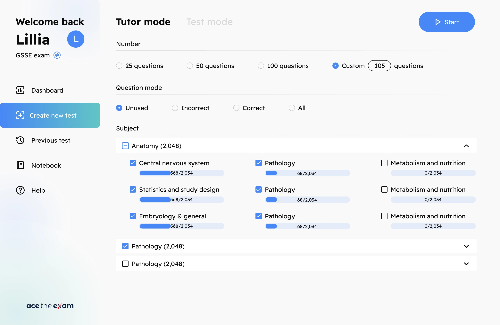
设置题量
用户可以选择预设题量，也可以输入自己希望练习的数量。
根据记录筛选
Incorrect 随最近作答结果更新，答对后移出，答错后再次进入。
选择科目
选择科目时可以同时查看已做题目的比例。
图中保留了设计阶段的选项，最终上线版本不含 Marked 和 Omitted。
学习体验 / 反馈时机
为日常复习和模拟考试设置不同模式
日常复习中，用户可以在答题后立即查看解析。如果希望模拟真实考试，则需要限时作答，并在结束后统一查看答案。两种模式都在创建练习时选择，主要区别是时间限制和解析的展示时机。
理解知识
作答→查看解析→下一题
检验表现
限时作答→提交→统一回顾
答题后即可查看解析
Tutor 模式不设时间限制，用户可以逐题查看解析。我希望这种安排能让用户专注于理解题目，减轻答错时的心理负担。
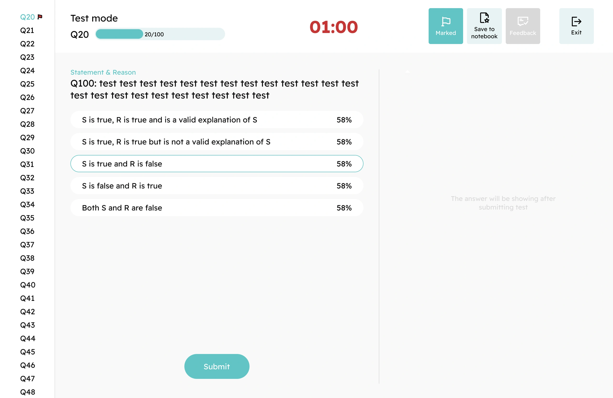
界面中的选项比例为示例内容；该反馈功能在首版上线后加入。
学习体验 / 回顾与数据
方便用户回看错题和自己收藏的题目
收藏也包含答对后仍想回看的题目
用户有时答对了题目，仍希望以后再看。因此，除了按作答记录筛选错题，平台还提供 Notebook 收藏功能。用户可以自行保存需要回顾的题目，不受当前对错状态影响。
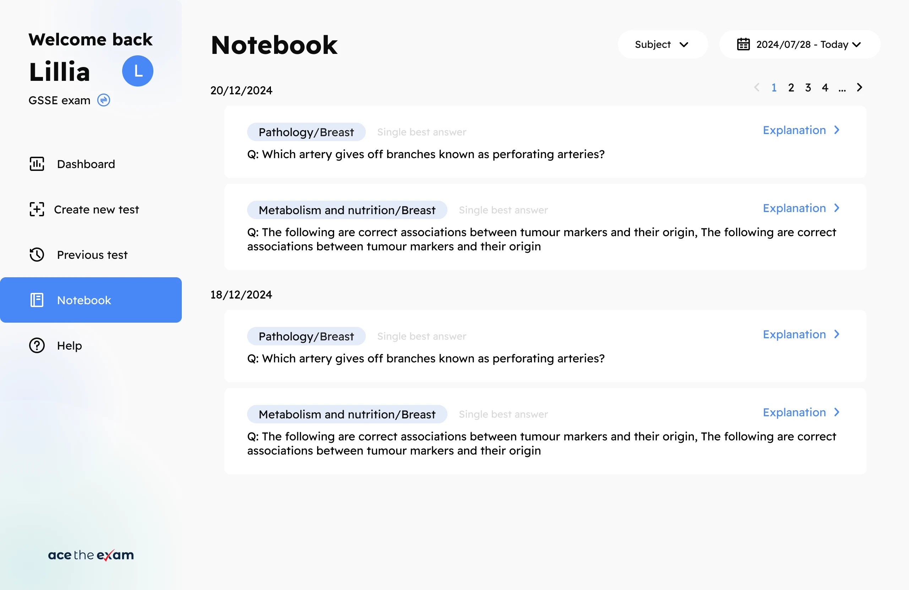
按最近作答结果更新
Incorrect
答错 → 进入错题 → 答对后移出
由用户主动收藏
Notebook
值得重看 → 主动收藏 → 再次回顾
用答题数据辅助后续复习
用户可以在结果页查看本轮成绩，也可以在 Dashboard 中了解累计复习情况，作为选择后续练习的参考。
01覆盖进度
我接触了多少内容？
已做过的不重复题目 ÷ 题库总量
辅助识别尚未覆盖的范围02答题正确率
我的回答表现怎样？
基于全部答题记录统计正确率
为后续科目选择提供参考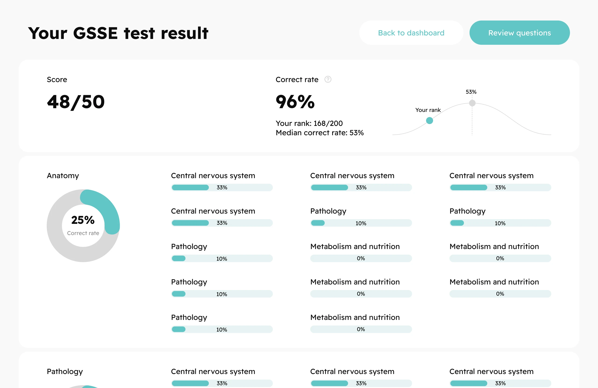
响应式设计
适配在职用户的手机复习场景
在职用户会利用碎片时间复习，也会通过手机访问平台。PC 端将题目和解析并排展示；手机端空间有限，我将解析放到选项下方，用户可以向下阅读。我还负责制定适配规范，与开发伙伴核对不同屏幕下的显示效果。
PC / 并列对照
→题目与选项解析
Mobile / 顺序阅读
题目↓选项↓解析
手机端将解析放在选项下方，
通过纵向滚动查看。
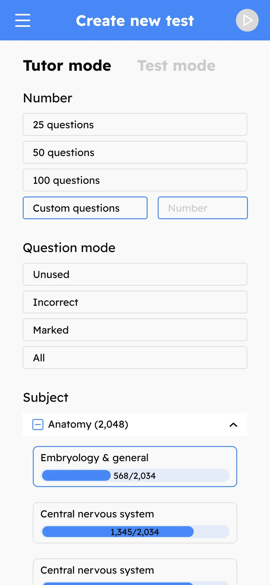
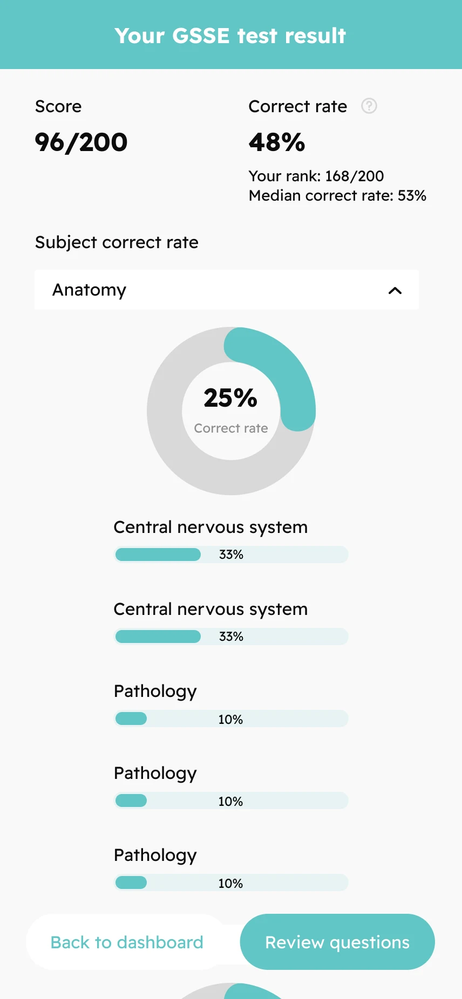
展示素材保留原始设计稿，部分文字与数字为占位内容。
持续迭代
根据用户反馈加入选项选择比例
上线后，有用户提出想知道多少人选择了和自己相同的答案。我们在后续版本中加入各选项的选择比例，用户查看解析时可以看到这些数据。
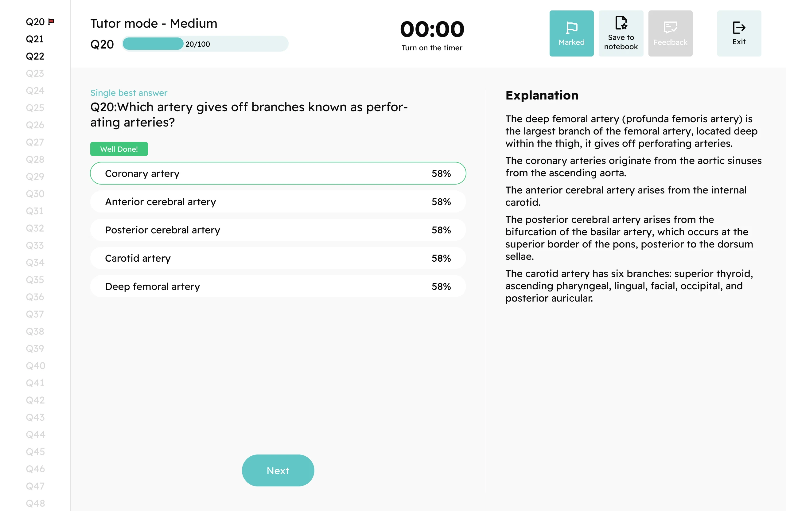
我们希望这项功能增加练习中的互动感。目前没有单独统计它对留存的影响。
品牌官网 / 约 2026 年上线
更新官网视觉，展示平台的使用方式
创始人认为旧官网的视觉风格较为老旧，希望提升品牌辨识度。我主要负责视觉与动画呈现，在首页更突出地展示产品界面，并沿用学习平台的蓝色和青绿色。希望首次访问的用户能更直观地了解产品的使用方式。
专业与可信
蓝色作为品牌主色
亲和与活力
青绿色辅助区分内容
Aa 文突出产品界面
调整标题与界面的视觉层级
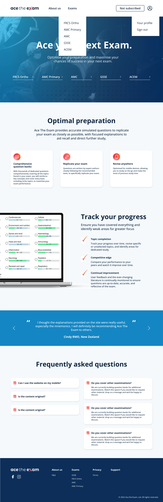
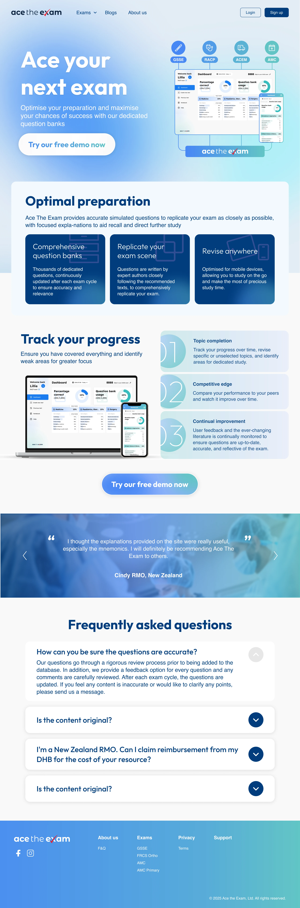
在首屏展示 PC 和手机端界面
新版首屏使用了学习平台和移动端的界面组合，向访客展示产品。标题、背景和按钮也采用统一的蓝绿色系。
为运营团队增加 Blog 页面
运营团队需要一个发布内容的位置，因此官网增加了 Blog。我负责列表和文章详情页的视觉设计，使文章浏览与阅读页面保持一致的风格。
Blog / Editorial experience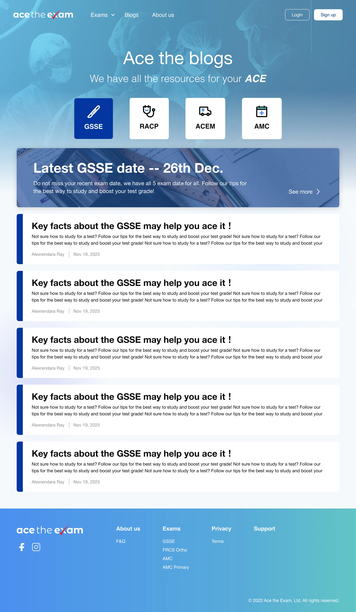
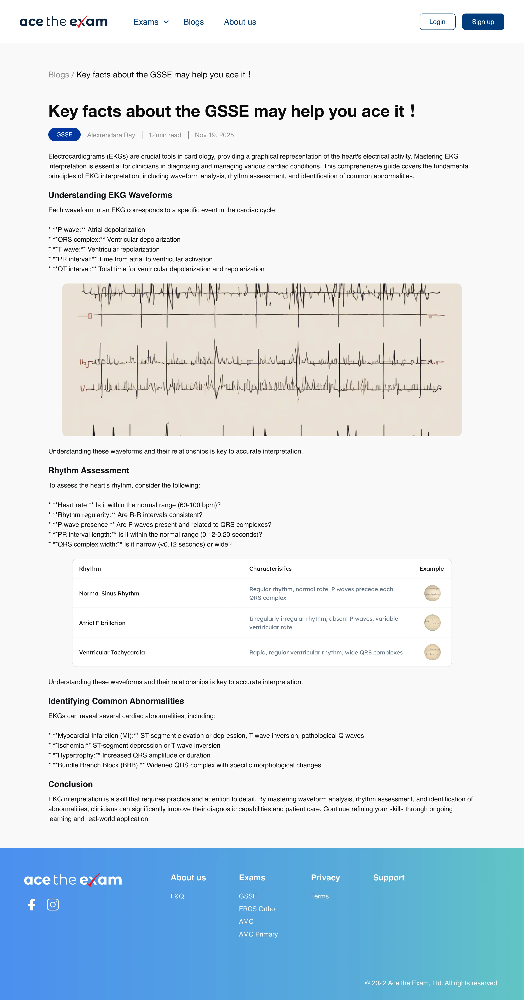
本案例使用静态设计素材呈现官网视觉，未模拟原官网动画。
成果与反思
项目上线后的结果与后续计划
+15%
注册用户总数增长
根据后台统计，新版上线后六个月内，注册用户总数较上线前增长约 15%。同期也有运营推广，因此这一增长是产品更新与运营共同作用的结果。
参与产品重构
功能定义、产品逻辑、信息架构与 UI/UX。
新版学习平台上线
练习模式、学习数据、收藏与回顾流程。
官网更新与持续迭代
品牌视觉、动画与 Blog 页面。
下一阶段 · 尚未实现
继续探索考试日期与复习计划的结合
后续希望结合遗忘规律推荐需要重看的错题，并根据用户的考试日期帮助安排复习进度。这部分尚未实现，需要进一步讨论推荐规则，并了解用户是否能按计划完成学习。